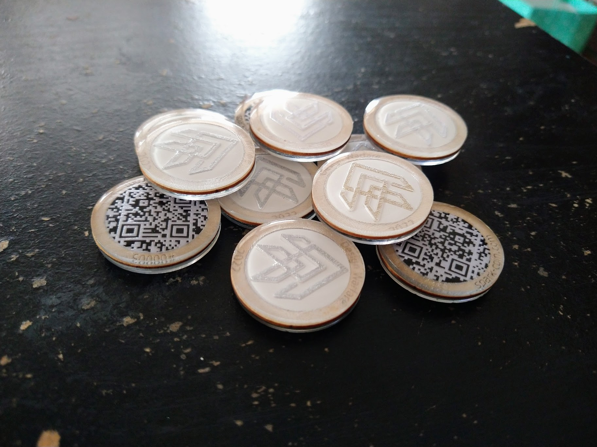

"Spark Coins" let you spend other people's money! To be fair, I mean an investor's or senior leader's money. Imagine attending a Spark event, tech expo, or even just watching one from afar, but you have a magic coin that lets you spend a percentage of that event's "money pool" towards Innovation projects or products. The percentage and amount of money represented by each coin is managed by Campaign Managers via a simple spreadsheet and may range between hundreds to hundreds-of-thousands of dollars, depending on the campaign size and coin distribution. During the "market", coins are digitally unlocked and all coin-holders use the coins to interactively fund the innovations they need most, in far greater detail and responsibility than traditional panels or voting systems. This crowd-sources funding decisions as the digital back-end shows details/pitch recordings of each innovation, and their real-time funding status, and even fosters a Q&A chatroom via an intuitive drag-and-drop web interface, with all data residing in a human-readable spreadsheet. At the conclusion of the event market, that spreadsheet is a detailed spend-plan featuring innovations that met any/all of their funding goal tiers, maximized goals met based on coin-holder demand using any unspent funds, and prevented any over-budgeting.
To simulate what happens when you scan a coin, click here
All technology is open-source and available without a license - just contact me if you want it all glued together (both figuratively and literally) for your event! You can find me almost anytime in the AllSpark Discord here: https://discord.gg/DV3pFSuM5X